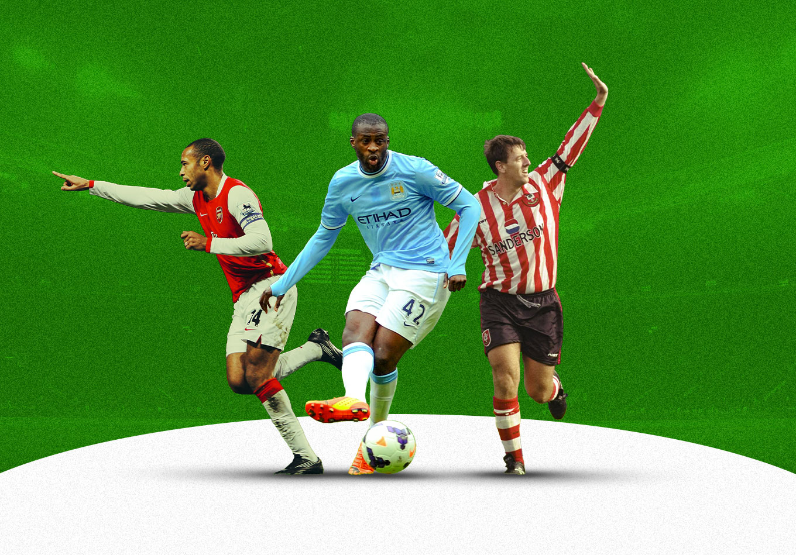
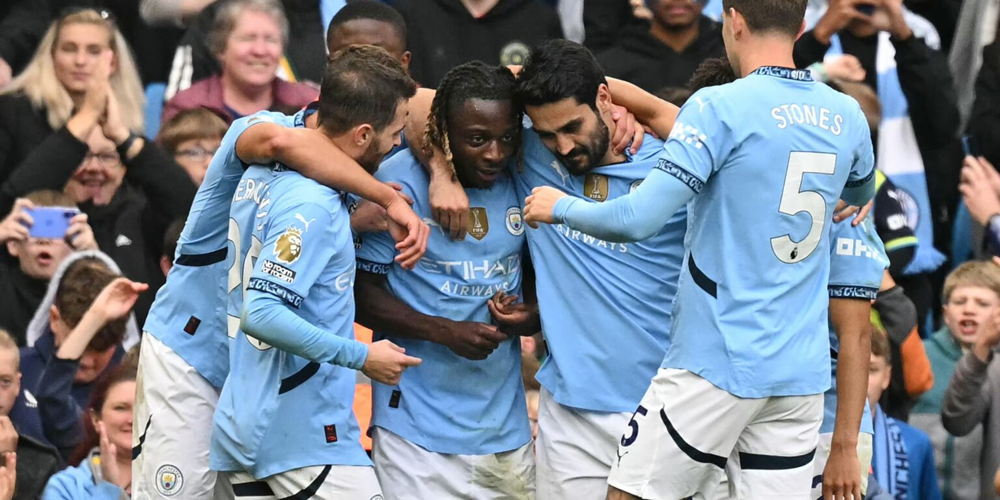
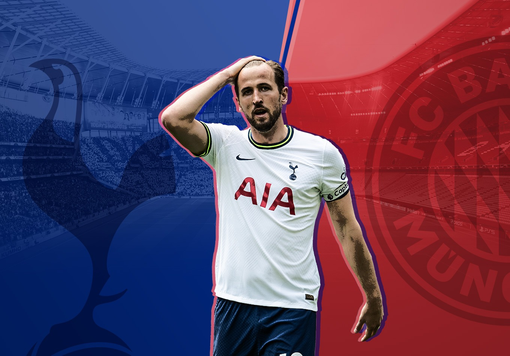

A platform designed specifically for football fans .Here you can predict the results of English Premier League matches with high accuracy and efficiency using artificial intelligence.
For entertainment and sports analysis only.Not for betting or commercial use.
Choose your favorite team and enjoy instant and accurate predictions in the WINNER section, or scroll down to see the latest league news.
James Milner is on the cusp of breaking the Premier League's all-time appearance record having crossed the 652-game mark.The 40-year-old Brighton midfielder/full-back is just two games shy of breaking Gareth Barry's record of 653. With plenty of games left this season, barring injury, it is all but certain that the former Liverpool man will break the record of his former Aston Villa and Manchester City teammate.Milner's most recent appearance came as he was introduced off the bench for Brighton's game against Everton. His introduction in the 96th minute meant the three-time Premier League winner will need just one more appearances to match Barry, and two appearances to claim the record outright.
Fulham forward Raúl Jiménez scored his 12th Premier League penalty from 12 attempts in their meeting with Manchester United in February 2026. That meant that the Mexican striker became the player to take the most penalties in the Premier League with a 100% success rate.He took the accolade for the most penalties taken with a 100% success rate from former Manchester City midfielder Yaya Touré. The Ivorian star might have lost his cool about not being given a birthday cake for his 31st birthday, but he certainly kept a fine temperament from the penalty spot.

Brentford lost 3-1 to Nottingham Forest on Matchday 1 of the 2025-26 Premier League season, validating pre-season relegation fears. Despite their fifth top-flight campaign since 2021 promotion, the club suffered major summer upheaval, losing long-term coach Thomas Frank, star forwards Bryan Mbeumo and Yoane Wissa, and captain Christian Nørgaard. Former set-piece coach Keith Andrews' risky first managerial appointment struggled immediately, conceding three goals within two minutes of the second half before a brief fightback against a coasting Forest.
Premier League 2025-26 has become a festival of frustration with 17 goalless draws already - the highest in over a decade and climbing fast. The league's trademark chaos has been replaced by tactical stalemates, with goals per game plummeting to 2.7 from 3.3 last season. Shots on target average a measly 8.2 per match (lowest ever recorded), while long-range attempts have nearly vanished at under 8 per game.What changed? Teams have collectively shifted to hyper-defensive, direct play - short passes dropped 12%, crosses down 15%. Defenses now deploy "organized chaos": multiple layers of clustered blockers specifically designed to neutralize central penetration. Even elite attacks struggle - Manchester City averages just 1.8 xG per game (their lowest since 2016), while Arsenal's possession dominance yields zero breakthroughs against parked buses.

After roughly 18 months in La Liga with Atlético Madrid, Conor Gallagher is returning to London and the Premier League. But having come through the academy at Chelsea and appeared prominently in the Blues’ senior side, he is now bound for Tottenham.It’s unlikely a transfer that’ll endear himself to Chelsea fans who once appreciated his status as a homegrown player, but it’s another big move for the England international after broadening his horizons with a decent spell in Madrid.And perhaps crucially for him, Gallagher’s imminent return to the Premier League comes with the 2026 World Cup on the horizon. After only earning a single England cap in 2025, his chances of getting into the squad for the summer appear slim, but he might argue that playing well in the English top flight gives him a greater opportunity.Tottenham weren’t the only Premier League club in for him either, highlighting how his stock at home has remained high. Spurs hijacked Aston Villa’s move for Gallagher as they look to improve their squad for the second half of the season after failing to impress for most of the 2025-26 campaign to date.
As 2026 begins, the Premier League season enters its decisive phase with several historic records under threat. Erling Haaland (19 goals in 18 games) chases his own 36-goal season record from 2022-23, while James Milner (648 appearances) needs just 5 more games to surpass Gareth Barry's 653-match record. Wolverhampton Wanderers risk infamy with Derby County's 11-point lowest-ever total (2007-08), having earned only 3 points in half a season. The league has already seen 16 stoppage-time winners (needing 9 more to break 2023-24's 27-goal record), Ryan Cherki threatens Henry/De Bruyne's 20-assist mark, and Arsenal's Max Dowman could become the youngest-ever scorer before September.
Ryan Giggs holds the record for the most Premier League assists with 162 (or 163 per some sources), achieved during his illustrious career with Manchester United. This remarkable feat spans 632 appearances from 1992 to 2014, outpacing legends like Kevin De Bruyne, who sits second with around 119 assists as of early 2026 and remains active with Manchester City. Giggs' longevity and vision made him the undisputed assist king, a testament to his pivotal role in United's dominance, though modern tracking sometimes varies slightly on exact counts.
Manchester City firmly hold the record for the most consecutive wins by one Premier League team against another, a staggering achievement that currently stands at an impressive 16 straight victories, all accomplished against Fulham from October 2009 through to their final league encounter in 2021. This extraordinary run not only underscores the Sky Blues' overwhelming dominance during that era but also reflects the tactical brilliance and relentless consistency of managers like Roberto Mancini, Manuel Pellegrini, and especially Pep Guardiola, who oversaw the latter stages of this unbeaten streak against the Cottagers. Spanning over a dozen years and multiple seasons, City's supremacy in these fixtures—often featuring high-scoring thrashings and comfortable triumphs—highlights their evolution into one of Europe's most formidable sides, leveraging superior squad depth, technical precision, and attacking firepower to dismantle Fulham time and again.
Former Arsenal, Ipswich Town and West Brom midfielder Brian Talbot is discussing the aftermath of the 1980 FA Cup final with Opta Analyst. On the team bus following the game at the end of a record-breaking season, Talbot collapsed.“The doctors took a look at me, and I was hooked up to a heart monitor for 24 hours. I didn’t think much of it, and it can’t have been that bad because four days later I was playing 120 minutes in the Cup Winners’ Cup final. And I scored my penalty.”That season, Talbot set a record that still stands today for the most club games played by any player for a top-flight team in the history of English football. And what’s more, he didn’t just feature in all 70 of Arsenal’s matches, he started every single one.
With the rumored hiring of Mauricio Pochettino reportedly imminent, the United States men’s national team has seemingly acquired the big-name manager so much of the fan base was demanding. But with a national team, the first order of business isn’t a shopping spree as it can be with a club. That contrast is particularly apparent when considering a manager whose last employer was Chelsea, a club that jumps on a transfer like Cristiano Ronaldo claims a free kick.Pochettino’s 191 wins in league play in the top five European leagues since his first match with Southampton in 2013 through the end of last season ranks eighth among all coaches in that time. While it would be jumping the gun to speculate on how he’ll piece together his next squad and debate its quality so soon after a massive Copa America disappointment for the U.S. under Gregg Berhalter, Pochettino is inheriting a team that continues to expand its footprint in those leagues.
Wow. Bayern Munich have done something incredible. They have made Daniel Levy an offer that was too good to turn down. After having a bid accepted for Harry Kane on Thursday, it appears that Spurs’ all-time highest goalscorer and arguably the greatest player the club has ever had has decided to take the plunge and move to the Bundesliga champions.Kane has decided to leave the Premier League – and with it, much of his hopes of hunting down Alan Shearer’s goal record – for a Bundesliga title every season and a genuine chance of winning the UEFA Champions League.So, what does the move mean for all involved? How will Spurs adjust to life after Kane? What does it mean for Shearer’s Premier League goals record? What can Kane achieve in Germany? Here, we try to answer those very questions.
Ange Postecoglou enjoyed a successful time in Japan with Yokohama F. Marinos, guiding them to their first J. League title in 15 years in 2019.He also did very well at Celtic, where he brought a number of players from Japan to Scotland to great effect, such as Kyogo Furuhashi, Daizen Maeda and Reo Hatate, among others.Somewhat surprisingly, Postecoglou didn’t dip into the Japanese market during his time at Tottenham Hotspur, but just a few weeks after sacking the Australian, the Premier League club have added a player to their ranks directly from the J. League.Kota Takai has become only the second Japanese player ever to represent Spurs’ men’s team after Kazuyuki Toda, completing a move from Kawasaki Frontale, and it wouldn’t be a surprise if this was a deal that was planned while Postecoglou was still in situ in north London.
Keep visiting the page every week for more news.